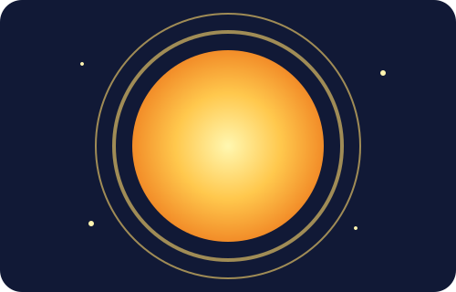

☀️ ดวงอาทิตย์
เนื้อหาความรู้เกี่ยวกับดวงอาทิตย์

ลักษณะทั่วไป
ดวงอาทิตย์เป็นดาวฤกษ์ที่อยู่ใจกลางระบบสุริยะ มีอายุประมาณ 4,600 ล้านปีและเป็นแหล่งพลังงานหลักของระบบสุริยะ แรงโน้มถ่วงของดวงอาทิตย์เป็นแรงสำคัญที่ทำให้ดาวเคราะห์และวัตถุต่าง ๆ โคจรรอบมัน
ข้อมูลสำคัญ
ดวงอาทิตย์ประกอบด้วยไฮโดรเจนและฮีเลียมเป็นหลัก โดยไฮโดรเจนเป็นองค์ประกอบที่มีมากที่สุด นอกจากนี้ยังมีธาตุอื่น ๆ เช่น ออกซิเจน คาร์บอน และเหล็กในปริมาณน้อยกว่า
เพิ่มเติม
แก่นกลางเกิดปฏิกิริยานิวเคลียร์ฟิวชัน โดยไฮโดรเจนรวมตัวกันเป็นฮีเลียมและปล่อยพลังงานจำนวนมหาศาลออกมา
แก่นกลางเกิดปฏิกิริยานิวเคลียร์ฟิวชัน โดยไฮโดรเจนรวมตัวกันเป็นฮีเลียมและปล่อยพลังงานจำนวนมหาศาลออกมา
สิ่งที่น่าสนใจ
โครงสร้างมี 6 ชั้น ได้แก่ แก่นกลาง เขตแผ่รังสี เขตพาความร้อน โฟโตสเฟียร์ โครโมสเฟียร์ และโคโรนา
โครงสร้างมี 6 ชั้น ได้แก่ แก่นกลาง เขตแผ่รังสี เขตพาความร้อน โฟโตสเฟียร์ โครโมสเฟียร์ และโคโรนา